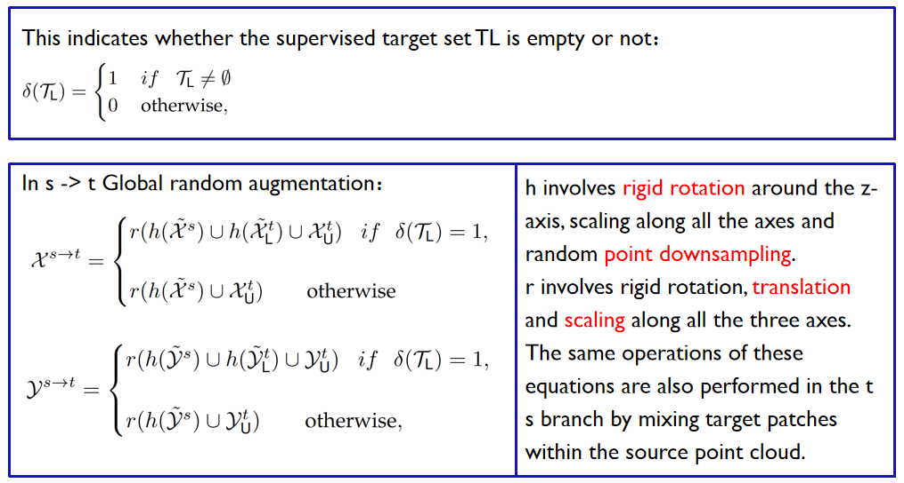
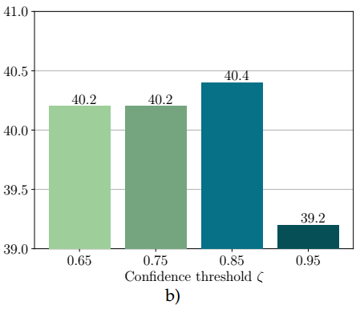

写在前面的话
latex公式要是不正常显示就加\，来实现转义字符，或者加空格，这篇文章里几个公式一开始以为是插件的问题，试了十几种都不行，弄了几个小时差点弄吐了…
另外，我们拟把cosmix作为基础的DA框架，在此基础上进行攻击和防御。
0 Abstract
提出了一种两分支对称网络架构，能够同时处理来自源域（例如合成）的点云和来自目标域（例如现实世界）的点云。每个分支通过集成来自另一域的选定数据片段并利用从源标签和目标（伪）标签导出的语义信息在一个域内运行。
1 Introduction
贡献主要是以下几点：
1.他们引入了新的领域自适应场景（4个无监督和4个半监督），用于3D语义分割任务，利用最近的带有相机和激光雷达的2D-3D驱动数据集；
2.他们提出了一种新的具有无监督跨模态损失的DA方法，该方法加强了多模态一致性，并与其他现有的无监督技术互补；
3.他们设计了一种鲁棒的双头结构，该结构将跨模态损耗与主要分割目标解耦；
4.他们评估了xMUDA及其UDA场景，并展示了其卓越的性能。
代码获取链接：https://github.com/saltoricristiano/cosmix-uda
2 Related work
点云分割中现有的无监督（UDA）和半监督（SSDA）适应方法概述：（后续论文的DA框架可以从中针对有代码的进行选取）
3 Cosmix
3.1 Preliminaries and definitions
该方法是在两个不同的混合点云集上进行训练的，第一个集合是由源点云与未标记目标点云的伪标记部分（或补丁）组成的。目标补丁将目标模态引入源域中，使更改后的源域与目标域更加相似。第二个是未标记的目标点云与随机选择的源点云补丁的组合。源补丁使更改后的目标域与源域更加相似，从而防止噪声伪标签的过度拟合。
数据包含三种——一是源域带标签的点云，二是目标域不带标签的点云，三是目标域少量带标签的点云（用于SSDA的情况，UDA用不到）。
接下来放Cosmix的结构图：
在上层分支，源域点云与目标域点云的选定补丁混合在一起，同时也与在半监督情况下的目标域点云的选定补丁混合。未标记的目标补丁来自，这些补丁是与教师网络在训练期间产生的最有信心的伪标签对应的点的子集。受监督的目标补丁则是根据源域训练集中的类频率分布随机选择的点的子集。这一过程的目的是通过混合源域和目标域的信息，使源域更适应目标域，从而提高模型在目标域上的性能。
在下层分支，目标域点云与源域点云的选定补丁混合在一起，并且在半监督情况下，还与目标域点云的选定补丁混合。源补丁是根据它们在训练集中的类频率分布随机选择的点的子集。这一过程旨在通过混合目标域和源域的信息，使目标域更适应源域，以防止过拟合，特别是在有噪声的伪标签存在的情况下。
3.2 Semantic selection
接下来是语义选择模块。这个模块的作用是用平衡的数据来训练后续的网络，因为有些类出现频率低，但也含有丰富的信息，不易被考虑进网络。通过这个模块能让所有类别的数据都尽可能被利用。$ \tilde{\mathcal{Y} }^s=f\left(\mathcal{Y}^s, 1-P_{\mathcal{Y} }^s, \alpha\right) $，这方程描述了一个操作，通过使用函数$ f $对源域数据的原始类别标签$ \mathcal{Y}^s $进行处理，生成一个经过加权随机采样的子集类别标签$ \tilde{\mathcal{Y} }^s $。$ \mathcal{Y}^s $是源域数据的原始类别标签，表示每个数据点属于哪个真实的类别，$ P_{\mathcal{Y} }^s $是类别在数据集S内出现的频率，超参数$ \alpha $用来控制每个点云中的类别比例，$ \alpha $越大选择的类别越多，反之也一样。$ 1-P_{\mathcal{Y} }^s $代表罕见类别有更高的机会被选择，从而达到类别平衡。再来看下层的公式：$\tilde{\mathcal{Y}}_{\mathrm{U}}^t=g\left(\Phi_{\theta^{\prime}}\left(\mathcal{X}_{\mathrm{U}}^t\right), \zeta\right)$，其中$\tilde{\mathcal{Y}}_{\mathrm{U}}^t$是目标域未标记数据的伪标签，表示通过教师网络产生的预测结果，$ \Phi_{\theta^{\prime} }\left(\mathcal{X}_{\mathcal{U} }^t\right) $这部分表示目标域未标记数据$ \mathcal{X}_{\mathrm{U} }^t $通过教师网络（记为 $ \Phi_{\theta^{\prime} } $）的前向传播操作。$ \zeta $是置信度阈值，如果伪标签有高置信度那就通过筛选。
3.3 Compositional mix
然后是点云混合的步骤，分为三步，一是在各个域上的局部增强，二是点云混合，三是混合后再进行一次全局增强。
我们来看具体是怎么混合的，这个式子代表了目标域有监督的数据集是否为空，以s到t过程为例，如果不为空，那混合后的数据就等于局部增强后的原域数据与局部增强后的带监督的目标域数据，以及无监督的目标域数据之并，并后做一次全局增强，如果为空则不考虑空的数据，t到s也是一样的道理。
这里局部增强指的是绕z轴的刚性旋转，这类似于在水平方向旋转数据。这种操作可以模拟点云数据在不同方向上的观测；以及在 x、y 和 z 轴上进行缩放，这可以使数据变得更大或更小；以及随机点的降采样：数据中的点被随机地减少，这可以模拟数据中可能存在的噪音或缺失观测，有助于让模型更鲁棒，因为它可以处理数据的不完整性。
全局增强除了上面的刚性旋转和降采样外，还有一个点云平移，让数据的位置发生变化，模拟不同观测位置的效果。

3.4 Network update
接下来我们来看最后一个部分，网络更新的部分。student和teacher位置如图所示，我们还要关注ema部分。

$\mathcal{L}_{t o t}=\mathcal{L}_{s \rightarrow t}+\mathcal{L}_{t \rightarrow s}$
这个公式把学生网络的总损失函数定义为s到t和t到s的分割损失函数之和，需要最小化这个损失函数，实现在每一轮优化模型的分割性能。
$\theta_i^{\prime}=\beta \theta_{i-1}^{\prime}+(1-\beta) \theta$
这个公式的作用是将teacher网络的参数 逐渐更新为student网络的参数（θ），通过这种方式来传递teacher网络已有的知识和信息。具体来说，公式的右侧部分$(1-\beta) \theta$表示student网络的当前参数值，而左侧部分$\beta \theta_{i-1}^{\prime}$ 表示上一次更新后的teacher网络参数值，其中$\beta$是一个0-1之间控制更新速度的超参数。通过这个公式，teacher网络的参数在每次更新时会保持一部分上一次的值，同时融合student网络的参数，$\beta$越大更新越慢，但是越稳定，所以要根据实际情况来设置这个参数。
4 Experiments
4.1 Datasets and metrics
本文共使用了三个数据集：
（1）SynLiDAR。它是使用虚幻引擎创建的大规模合成数据集，由 198,396 个带注释的点云组成，具有 32 个语义类别。本文使用 19,840 个点云进行训练，使用 1,976 个点云进行验证。
（2）SemanticPOSS。它由 2,988 个带注释的真实世界点云组成，具有 14 个语义类。本文使用序列 03 进行验证，其余序列进行训练。
（3）SemanticKITTI。它是一个大规模分割数据集，由 LiDAR 采集流行的 KITTI 数据集 [26]、[30] 组成。它由 43,552 个带注释的现实世界点云组成，具有超过 19 个语义类别。本文使用序列 08 进行验证，其余序列进行训练 。
（4）nuScenes。它是一个大规模分割数据集。由现实世界的 850 个序列（700 个用于训练，150 个用于验证）组成，总共 34, 000 个带注释的点云，具有 32 个语义类别本文在所有实验中都使用官方的训练和验证分割。
4.2 Implementation details & Quantitative comparisons for UDA
本文在 PyTorch 中实现了 CoSMix，并在 4块A100 (40GB SXM4) 上运行的实验。使用MinkowskiNet作为点云分割网络 ，特别使用MinkUNet32。
Source* 模型和 Target* 模型分别对应于在源合成数据集（下界）和目标真实数据集（上界）上训练的模型。
4.3 Robustness to noisy pseudo-labels
在伪标签蒸馏的过程中，作者研究了正确设置置信度阈值的重要性。他们通过在不同的置信度阈值范围（从0.65到0.95）重复实验，并在图5b中报告了获得的适应性能。CosMix 对于嘈杂的伪标签表现出鲁棒性，当置信度阈值设为0.65时，达到了40.2mIoU。最佳的适应性能是在置信度阈值为0.85时实现的，为40.4mIoU。使用高置信度阈值0.95时，性能下降到39.2mIoU。作者指出，过高的置信度阈值导致选择的伪标签过少，无法为适应性提供有效的贡献。

5 Conclusion
本文介绍了一种在3D语义分割领域自适应的新方法，其中包含一种新颖的3D点云混合策略，同时利用语义信息和结构信息。该方法包括两个变体：一个用于无监督适应（CoSMix-UDA），另一个用于半监督适应（CoSMix-SSDA）。作者在合成到真实和真实到真实的情境中进行了全面的评估，涵盖了大规模、公开可用的激光雷达数据集，分别在UDA和SSDA设置中进行了实验。实验结果表明，这种方法在两个情境下均显著超过了当前的最先进方法。此外，详细的分析强调了CoSMix内部每个组件的重要性，验证了混合策略在解决3D LiDAR分割中的域偏移问题方面的有效性。
CoSMix的一个主要限制是依赖于伪标签，使得源域上初始热身模型的质量对于在目标域上的适应性能至关重要。一种替代方法可能涉及实施自监督学习，而不是使用源数据。未来的研究方向可能包括整合自监督学习任务、领域泛化、将CoSMix扩展到无源自适应任务，以及在3D物体检测中的应用。